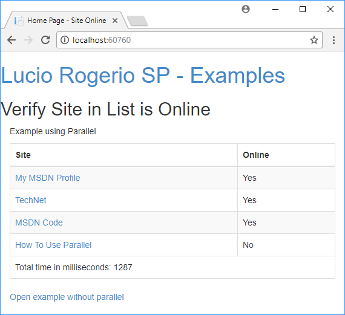

Do you have multiple processes that you would like to run at the same time? Get to know Parallel.
Are there special requirements or instructions for building the sample?
Description
In today's example we will see the gain in using the Parallel Class from the System.Threading.Tasks Namespace.
This class allows you to put multiple processes to run at the same time, and .NET waits until all are completed to continue running.
I created an example where a list of sites is generated that should be checked if it is Online, or crashed.
In this example the call in a simple way takes an average of 4 seconds as shown below, while running in Parallel takes slightly more than 1 second.

Definition From msdn.microsoft.com
Namespace System.Threading.Tasks
The System.Threading.Tasks namespace provides types that simplify the work of writing concurrent and asynchronous code. The main types areSystem.Threading.Tasks.Task which represents an asynchronous operation that can be waited on and cancelled, andSystem.Threading.Tasks.Task<TResult>, which is a task that can return a value. The System.Threading.Tasks.TaskFactory class provides static methods for creating and starting tasks, and the System.Threading.Tasks.TaskScheduler class provides the default thread scheduling infrastructure.